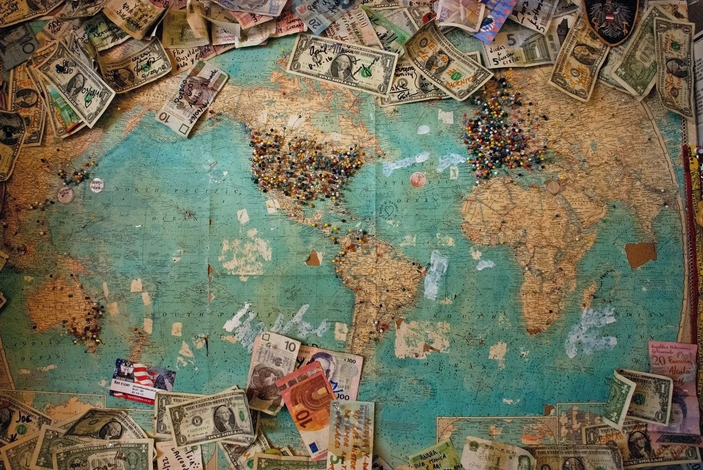

Location Scouting
The majority of landscape work requires multiple reconnaissance trips before a single sheet of film is exposed. Specific light conditions — the particular quality of early morning fog in the Pyrenees, the flat grey of an overcast Nordic winter — may only occur a handful of times per year.
Preferred working locations include the Pyrenean highlands, the Breton coast, the Scottish islands, and the Norwegian fjords. Documentary projects have taken the studio to Morocco, Japan, Peru, and across the American Southwest.
Each location is thoroughly researched before arrival — historical images studied, light mapping conducted via satellite imagery, and local contacts established to understand seasonal conditions.